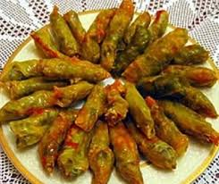
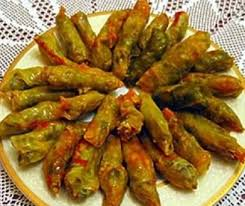
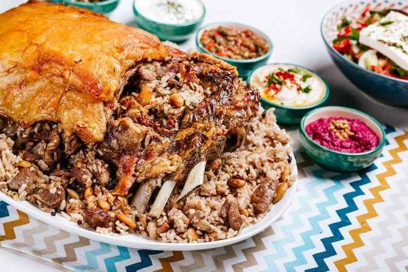
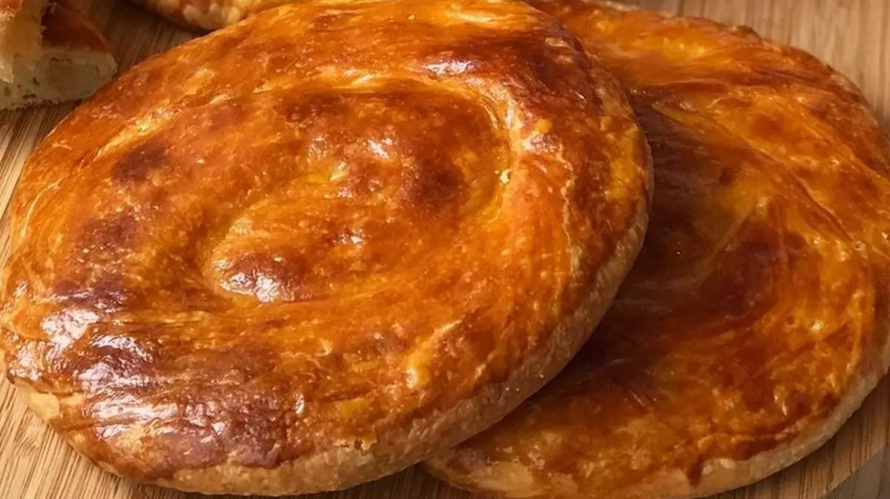
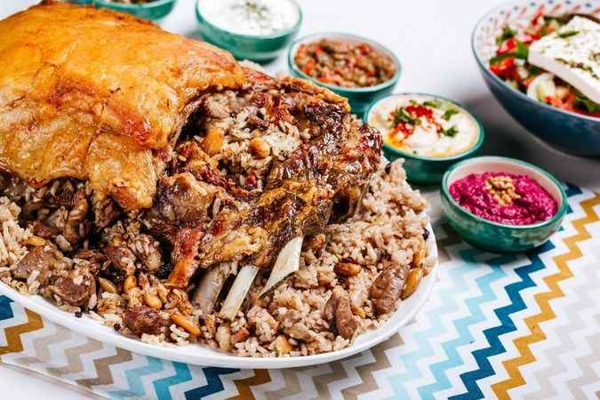
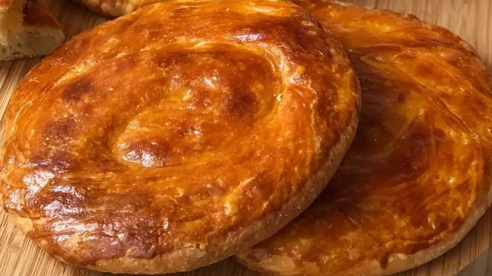
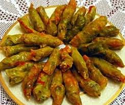
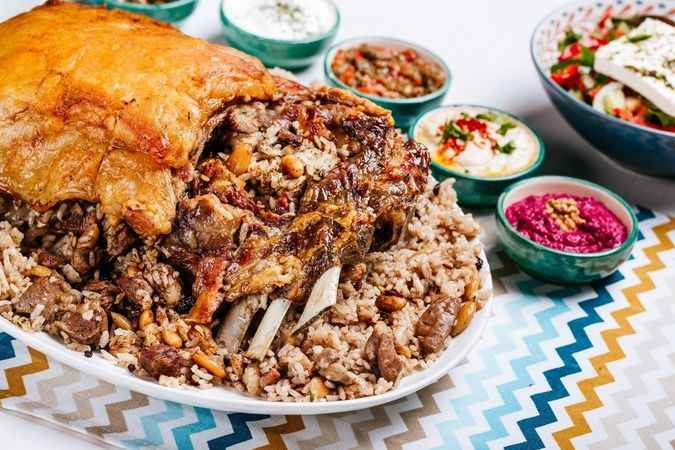
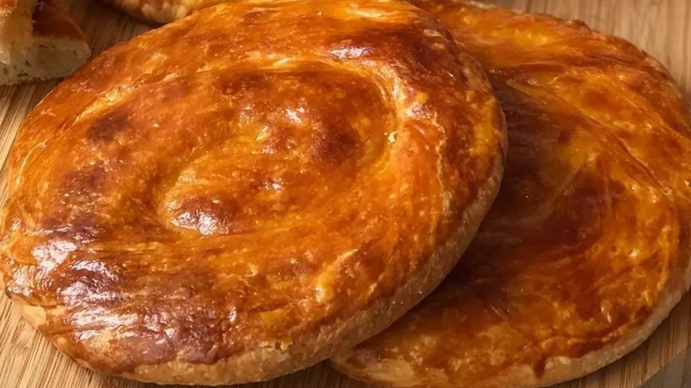

 



Yerleşim ilin batısında yer alır. Çavuş Dağı'nın kuzeydoğu eteklerinde kurulmuş olan kentin tarihsel çekirdeği kalenin çevresidir...
Lale zambak gillerdendir. Yaprakları uzun, mızraksıdır... Lalenin anavatanından olan İlimizde yanlış hasat ve tarım alanlarının genişlemesi ile lale alanları hızla daraltılmıştır...
Muş Ovası, tarımsal üretim için elverişlidir. Buğday, arpa ve şeker pancarı başlıca tarım ürünleridir. Geniş yaylalarda küçükbaş hayvancılık yaygındır. Kilim dokumacılığı ve halıcılık önemli geleneksel el sanatlarıdır. Tarih sayfalarında da var olan ve Türklere Anadolu'nun kapılarını açan büyük Malazgirt Zaferinin kazanıldığı yer olan Doğu Anadolu bölgesi içerisinde konumlanmış olan Muş şehrinin yiyecek olarak üzümü ve Velikanlı peyniri; hediyelik olarak ise lalesi ve kilimi oldukça meşhurdur.


